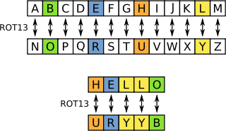

A Caesar Cipher, also known as a shift cipher or ROT13, is a letter substitution cipher that replaces a letter with another letter that is thirteen positions away of it's actual position. For example, 'A' rotates in 'N' and 'Y' translating into 'L' and so on and so on. The whole function of the cipher is able to encrypt and decrypt it's input using the same algorithm; ROT13 being it's own inverse because the algorithm rotates thirteen positions in a twenty-six letter alphabet. It's a method of encryption but not a very practical or very secure one. Generally used to hide things like spoilers, quiz answers, offensive material from a brief glance.
